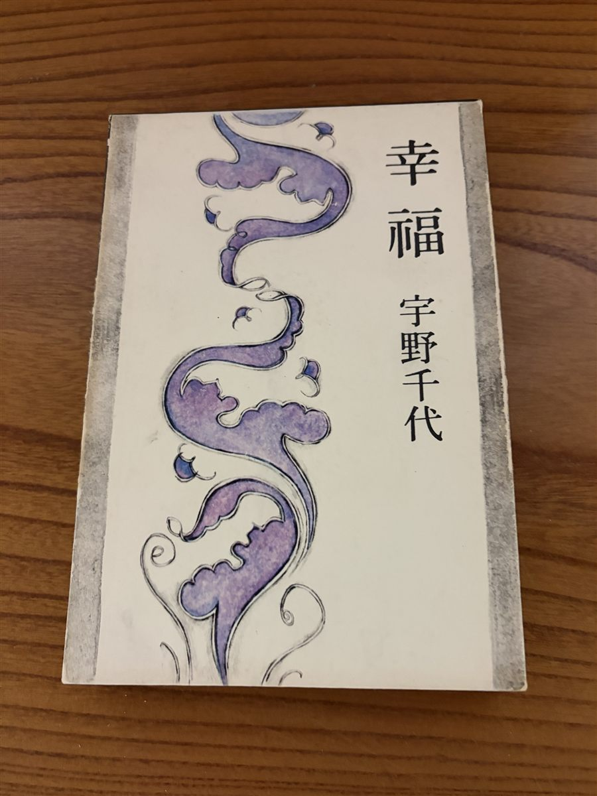
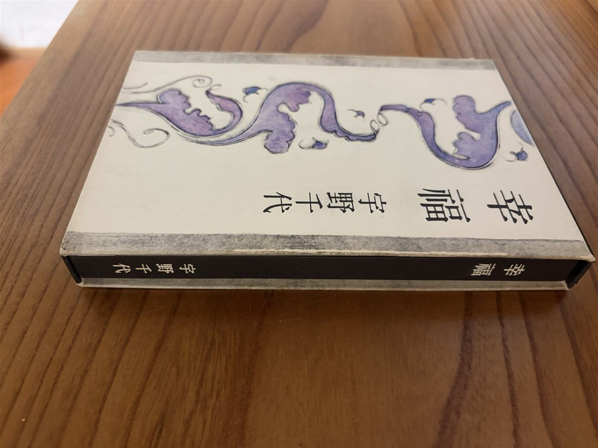
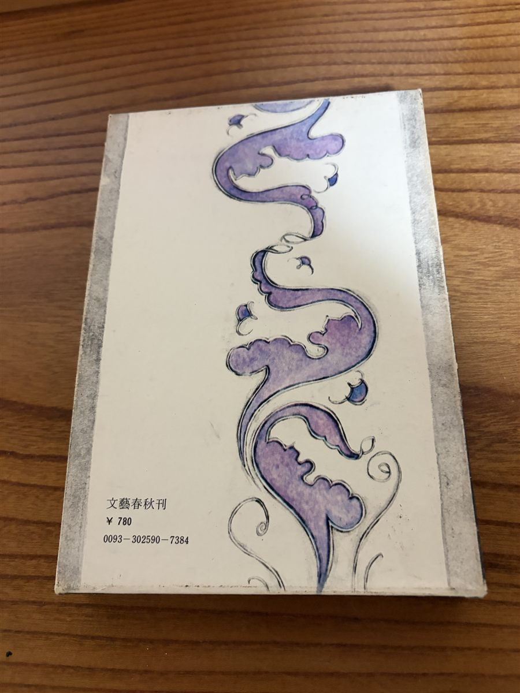

![[商品価格に関しましては、リンクが作成された時点と現時点で情報が変更されている場合がございます。]](https://hbb.afl.rakuten.co.jp/hgb/586cfd68.d4fe6233.586cfd69.d6978c6f/?me_id=1213310&item_id=22065518&pc=https%3A%2F%2Fthumbnail.image.rakuten.co.jp%2F%400_mall%2Fbook%2Fcabinet%2F2556%2F9784087902556_1_31.jpg%3F_ex%3D240x240&s=240x240&t=picttext "[商品価格に関しましては、リンクが作成された時点と現時点で情報が変更されている場合がございます。]")

![[商品価格に関しましては、リンクが作成された時点と現時点で情報が変更されている場合がございます。]](https://hbb.afl.rakuten.co.jp/hgb/586cfd68.d4fe6233.586cfd69.d6978c6f/?me_id=1213310&item_id=21983451&pc=https%3A%2F%2Fthumbnail.image.rakuten.co.jp%2F%400_mall%2Fbook%2Fcabinet%2F5499%2F9784167925499_1_32.jpg%3F_ex%3D240x240&s=240x240&t=picttext "[商品価格に関しましては、リンクが作成された時点と現時点で情報が変更されている場合がございます。]")
![[商品価格に関しましては、リンクが作成された時点と現時点で情報が変更されている場合がございます。]](https://hbb.afl.rakuten.co.jp/hgb/586cfd68.d4fe6233.586cfd69.d6978c6f/?me_id=1213310&item_id=21970313&pc=https%3A%2F%2Fthumbnail.image.rakuten.co.jp%2F%400_mall%2Fbook%2Fcabinet%2F1682%2F9784479321682_1_2.jpg%3F_ex%3D240x240&s=240x240&t=picttext "[商品価格に関しましては、リンクが作成された時点と現時点で情報が変更されている場合がございます。]")
![[商品価格に関しましては、リンクが作成された時点と現時点で情報が変更されている場合がございます。]](https://hbb.afl.rakuten.co.jp/hgb/586cfd68.d4fe6233.586cfd69.d6978c6f/?me_id=1213310&item_id=10662627&pc=https%3A%2F%2Fthumbnail.image.rakuten.co.jp%2F%400_mall%2Fbook%2Fcabinet%2F7015%2F9784087487015_1_2.jpg%3F_ex%3D240x240&s=240x240&t=picttext "[商品価格に関しましては、リンクが作成された時点と現時点で情報が変更されている場合がございます。]")
インストール
一番好きな作品。綿矢りささんの文章に初めて触れる方にもすすめたい一冊。
Amazonで作品を見る →Yahoo!ショッピングで見る →BOOKS / FAVORITE AUTHOR
全作品を手元に置いている一読者が、何度でも読みたくなる文章の魅力を紹介します。
私の好きな作家は綿矢りささんです。綿矢さんの本はどれも好きで、すべて持っています。
何より好きなのは、その文章。途切れることなく、すらすらと読み進められます。登場人物の表情や状況が自然と頭に浮かび、いつの間にか物語の中に入り込んでいます。
音声で本を楽しめる時代ですが、綿矢さんの作品には、紙の本だからこそ味わえる魅力があります。文字を自分のペースで追いながら、文章の流れを感じる読書の時間が好きです。
最初にすすめたいのは『インストール』。そして『蹴りたい背中』をはじめ、ほかの作品にもそれぞれ魅力があります。
Amazonで綿矢りささんの作品一覧を見る →新刊・注目の一冊｜作家デビュー25周年
綿矢りささんの作家デビュー25周年を記念する一冊。長年作品を読み続けてきた方も、これから読み始める方も、ぜひチェックしてみてください。Amazon・楽天ブックス・Yahoo!ショッピングからご覧いただけます。
Yahoo!ショッピングで『ま、さじ加減でしょ。』を見る →
NHKは2026年9月28日、連続テレビ小説『ブラッサム』の主題歌の原作小説として、綿矢りささんが書いた「桜（はな）の命は不滅なり」を公開しました。
作品の本文はNHK公式サイトで読むことができます。文章そのものを楽しみたい方にもおすすめの情報です。
綿矢りささんの影響で読んだ本
いま話題の宇野千代さんの本。こちらも綿矢りささんの影響で手に取りました。
手元にあるのは、文藝春秋刊の箱入りの単行本です。



この版は、Amazon・楽天市場・Yahoo!ショッピングでは取り扱いが見つかりませんでした。
『幸福』とは別の本ですが、いま新品で手に入る宇野千代さんの本です。
文春文庫(2026年8月)。95歳の宇野千代さんが、恋や仕事、おしゃれ、老いについて語った座談をまとめた一冊。
だいわ文庫(2026年6月)。以前のベストセラーが文庫になったもの。
集英社文庫。人生の知恵をまとめた一冊。
楽天ブックスでも本を探す
一番好きな作品。綿矢りささんの文章に初めて触れる方にもすすめたい一冊。
Amazonで作品を見る →Yahoo!ショッピングで見る →孤独や他人との距離感が印象的な芥川賞受賞作。
Amazonで作品を見る →Yahoo!ショッピングで見る →注目を浴びること、成長することの複雑さを描いた長編。
Amazonで作品を見る →Yahoo!ショッピングで見る →一人で過ごす日々と恋愛を描く物語。
Amazonで作品を見る →Yahoo!ショッピングで見る →さまざまな心の動きを味わえる短編集。
Amazonで作品を見る →Yahoo!ショッピングで見る →京都で暮らす三姉妹の日常と、それぞれの人生を描いた小説。
Amazonで作品を見る →Yahoo!ショッピングで見る →恋に向き合う二人の心情を描いた長編の上巻。
Amazonで作品を見る →Yahoo!ショッピングで見る →人との関わり方や自分らしさがテーマとなる一作。
Amazonで作品を見る →Yahoo!ショッピングで見る →日々の出来事や思いをつづったエッセイ。
Amazonで作品を見る →Yahoo!ショッピングで見る →綿矢りささんの長編作品。
Amazonで作品を見る →Yahoo!ショッピングで見る →北京を舞台にしたエネルギッシュな作品。
Amazonで作品を見る →Yahoo!ショッピングで見る →作品の詳細は販売ページでご確認ください。
Amazonで作品を見る →Yahoo!ショッピングで見る →複数の作家による作品集もあわせて紹介します。
ほかの作家とともに参加した作品集。
Amazonで作品を見る →ほかの作家とともに参加した作品集。
Amazonで作品を見る →ほかの作家とともに参加した作品集。
Amazonで作品を見る →リンク先には電子書籍版の商品ページも含まれます。紙の本を希望する場合は、Amazonの商品ページで版や形式を確認してください。
このページにはアフィリエイト広告を含みます。リンクを通じた購入により当サイトに報酬が発生する場合があります。価格・送料・在庫は各販売サイトでご確認ください。
![[商品価格に関しましては、リンクが作成された時点と現時点で情報が変更されている場合がございます。]](https://hbb.afl.rakuten.co.jp/hgb/586cfd68.d4fe6233.586cfd69.d6978c6f/?me_id=1213310&item_id=11531268&pc=https%3A%2F%2Fthumbnail.image.rakuten.co.jp%2F%400_mall%2Fbook%2Fcabinet%2F7586%2F9784309407586_1_2.jpg%3F_ex%3D240x240&s=240x240&t=picttext "[商品価格に関しましては、リンクが作成された時点と現時点で情報が変更されている場合がございます。]")
![[商品価格に関しましては、リンクが作成された時点と現時点で情報が変更されている場合がございます。]](https://hbb.afl.rakuten.co.jp/hgb/586cfd68.d4fe6233.586cfd69.d6978c6f/?me_id=1213310&item_id=12035387&pc=https%3A%2F%2Fthumbnail.image.rakuten.co.jp%2F%400_mall%2Fbook%2Fcabinet%2F8415%2F9784309408415_1_2.jpg%3F_ex%3D240x240&s=240x240&t=picttext "[商品価格に関しましては、リンクが作成された時点と現時点で情報が変更されている場合がございます。]")
![[商品価格に関しましては、リンクが作成された時点と現時点で情報が変更されている場合がございます。]](https://hbb.afl.rakuten.co.jp/hgb/586cfd68.d4fe6233.586cfd69.d6978c6f/?me_id=1213310&item_id=16036126&pc=https%3A%2F%2Fthumbnail.image.rakuten.co.jp%2F%400_mall%2Fbook%2Fcabinet%2F1781%2F9784309411781.jpg%3F_ex%3D240x240&s=240x240&t=picttext "[商品価格に関しましては、リンクが作成された時点と現時点で情報が変更されている場合がございます。]")
![[商品価格に関しましては、リンクが作成された時点と現時点で情報が変更されている場合がございます。]](https://hbb.afl.rakuten.co.jp/hgb/586cfd68.d4fe6233.586cfd69.d6978c6f/?me_id=1213310&item_id=19951104&pc=https%3A%2F%2Fthumbnail.image.rakuten.co.jp%2F%400_mall%2Fbook%2Fcabinet%2F9492%2F9784022649492.jpg%3F_ex%3D240x240&s=240x240&t=picttext "[商品価格に関しましては、リンクが作成された時点と現時点で情報が変更されている場合がございます。]")
![[商品価格に関しましては、リンクが作成された時点と現時点で情報が変更されている場合がございます。]](https://hbb.afl.rakuten.co.jp/hgb/586cfd68.d4fe6233.586cfd69.d6978c6f/?me_id=1213310&item_id=19909466&pc=https%3A%2F%2Fthumbnail.image.rakuten.co.jp%2F%400_mall%2Fbook%2Fcabinet%2F0775%2F9784087440775_1_2.jpg%3F_ex%3D240x240&s=240x240&t=picttext "[商品価格に関しましては、リンクが作成された時点と現時点で情報が変更されている場合がございます。]")
![[商品価格に関しましては、リンクが作成された時点と現時点で情報が変更されている場合がございます。]](https://hbb.afl.rakuten.co.jp/hgb/586cfd68.d4fe6233.586cfd69.d6978c6f/?me_id=1213310&item_id=19533252&pc=https%3A%2F%2Fthumbnail.image.rakuten.co.jp%2F%400_mall%2Fbook%2Fcabinet%2F6534%2F9784101266534_1_3.jpg%3F_ex%3D240x240&s=240x240&t=picttext "[商品価格に関しましては、リンクが作成された時点と現時点で情報が変更されている場合がございます。]")
![[商品価格に関しましては、リンクが作成された時点と現時点で情報が変更されている場合がございます。]](https://hbb.afl.rakuten.co.jp/hgb/586cfd68.d4fe6233.586cfd69.d6978c6f/?me_id=1213310&item_id=20676764&pc=https%3A%2F%2Fthumbnail.image.rakuten.co.jp%2F%400_mall%2Fbook%2Fcabinet%2F3950%2F9784087443950_1_5.jpg%3F_ex%3D240x240&s=240x240&t=picttext "[商品価格に関しましては、リンクが作成された時点と現時点で情報が変更されている場合がございます。]")
![[商品価格に関しましては、リンクが作成された時点と現時点で情報が変更されている場合がございます。]](https://hbb.afl.rakuten.co.jp/hgb/586cfd68.d4fe6233.586cfd69.d6978c6f/?me_id=1213310&item_id=21273220&pc=https%3A%2F%2Fthumbnail.image.rakuten.co.jp%2F%400_mall%2Fbook%2Fcabinet%2F6609%2F9784087446609_1_11.jpg%3F_ex%3D240x240&s=240x240&t=picttext "[商品価格に関しましては、リンクが作成された時点と現時点で情報が変更されている場合がございます。]")
![[商品価格に関しましては、リンクが作成された時点と現時点で情報が変更されている場合がございます。]](https://hbb.afl.rakuten.co.jp/hgb/586cfd68.d4fe6233.586cfd69.d6978c6f/?me_id=1213310&item_id=21302631&pc=https%3A%2F%2Fthumbnail.image.rakuten.co.jp%2F%400_mall%2Fbook%2Fcabinet%2F6541%2F9784101266541_1_2.jpg%3F_ex%3D240x240&s=240x240&t=picttext "[商品価格に関しましては、リンクが作成された時点と現時点で情報が変更されている場合がございます。]")
![[商品価格に関しましては、リンクが作成された時点と現時点で情報が変更されている場合がございます。]](https://hbb.afl.rakuten.co.jp/hgb/586cfd68.d4fe6233.586cfd69.d6978c6f/?me_id=1213310&item_id=21676910&pc=https%3A%2F%2Fthumbnail.image.rakuten.co.jp%2F%400_mall%2Fbook%2Fcabinet%2F0092%2F9784163920092_1_4.jpg%3F_ex%3D240x240&s=240x240&t=picttext "[商品価格に関しましては、リンクが作成された時点と現時点で情報が変更されている場合がございます。]")
![[商品価格に関しましては、リンクが作成された時点と現時点で情報が変更されている場合がございます。]](https://hbb.afl.rakuten.co.jp/hgb/586cfd68.d4fe6233.586cfd69.d6978c6f/?me_id=1213310&item_id=21964293&pc=https%3A%2F%2Fthumbnail.image.rakuten.co.jp%2F%400_mall%2Fbook%2Fcabinet%2F0080%2F9784087430080_1_40.jpg%3F_ex%3D240x240&s=240x240&t=picttext "[商品価格に関しましては、リンクが作成された時点と現時点で情報が変更されている場合がございます。]")
![[商品価格に関しましては、リンクが作成された時点と現時点で情報が変更されている場合がございます。]](https://hbb.afl.rakuten.co.jp/hgb/586cfd68.d4fe6233.586cfd69.d6978c6f/?me_id=1213310&item_id=21807091&pc=https%3A%2F%2Fthumbnail.image.rakuten.co.jp%2F%400_mall%2Fbook%2Fcabinet%2F5590%2F9784093965590_1_9.jpg%3F_ex%3D240x240&s=240x240&t=picttext "[商品価格に関しましては、リンクが作成された時点と現時点で情報が変更されている場合がございます。]")